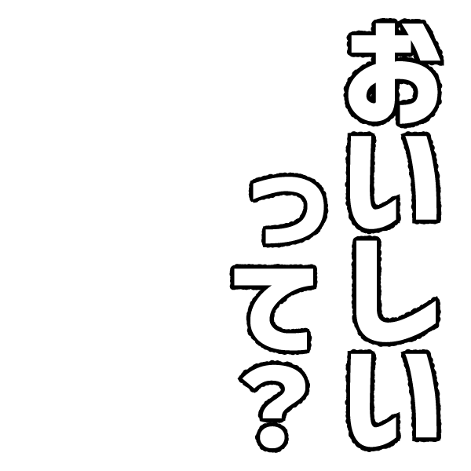
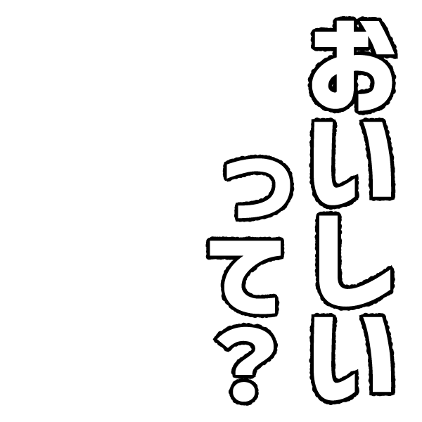
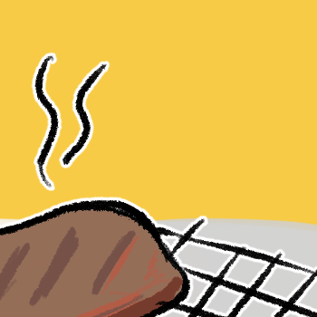
ジューっとお肉の
焼ける音を聞いたとき？
焼ける音を聞いたとき？
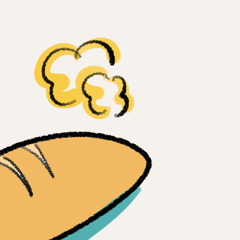
焼きたてのパンの匂いをかいだとき？
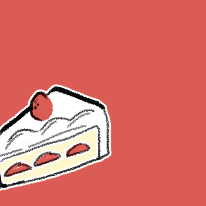
あまいケーキを食べたとき？

いろんな感覚を使って美味しいを感じています。
人間は、目で見て、鼻でかいで、耳で聞いて、舌で味わって

パリッとしたせんべいの音

色とりどりで鮮やかなサラダ

甘いケーキやクッキー

爽やかなフルーツの香り

かつおぶしなどの旨み
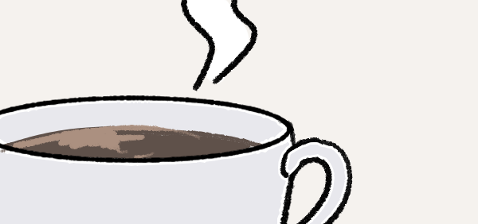
苦いコーヒー
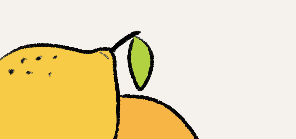
すっぱいレモン
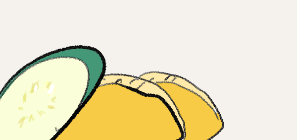
塩っぽい漬物
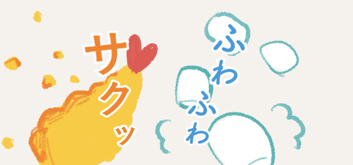
味以外でも、サクサクふわふわなど…
食感で食べ物の
印象が変わります。
印象が変わります。

しかし！これのみでしょうか？

このように人は
五感を使って
五感を使って
美味しいを感じられます

仲のいい人と食べるとき

お腹が空いているとき

楽しい気分のとき

周りの環境や気分が
おいしいと感じさせるのかもしれません

では猫にとっておいしいってなんでしょう？

ねこは人が見ている色と同じ色は見えません

見た目はどうでしょう

猫の目には赤っぽい色が
灰色や黄色みがかった色に見えています。

見える色が少ないため
鮮やかな色の食べ物を見ても
鮮やかな色の食べ物を見ても
おいしさには関係なさそうです

ねこは音にとても敏感

そして音はどうでしょう

食事中に大きな音を聞くと
食べる気が失てしまうことがあります

また、普段たべているごはんんに関わる音を聞くと
ごはんがもらえると反応することがあります。

しかし、音には反応しても
音によっておいしく感じ、食事が進むようなことはないようです。

ねこは人よりも鼻がいいのです

においはどうでしょう

あれは、この食べ物は安全かどうかを確めている行動なんです。
食べる前に、においをかぐ姿を見たことがありますか？

猫にとって、においは「食べられるかどうか」を
判断する大事な手がかり。
判断する大事な手がかり。

人のように匂いによって美味しさを感じるというより、

ただ、好きな食べ物の香りによって食べたいと思わせるきっかけになるようです。
また、においに敏感なため、好き嫌いにも影響すると言われています。

ですが、あくまで好みや苦手な食べ物のにおいを記憶しているだけで、
においによって食べ物をよりおいしく感じているかはわかっていません。
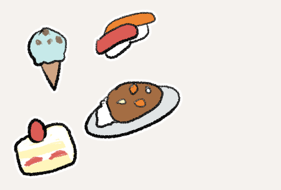
猫と人では感じる味も違います。
猫が感じられる味は
猫が感じられる味は

次は味！

苦味

酸味

塩味

うま味の４つ

あまさは感じないと言われています。

食べ物の好き嫌いには味が関わっていると言われているため、
おいしいと感じる味があるようです。

ねこにも食感の好みがあるようです。

さらに
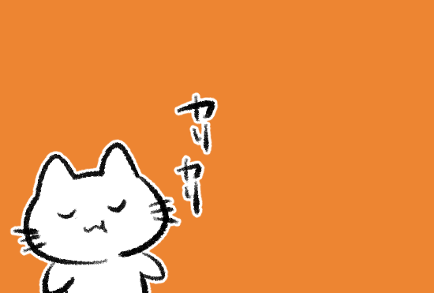
固めのものを好む子もいます

やわらかいごはんが好きな猫もいれば、
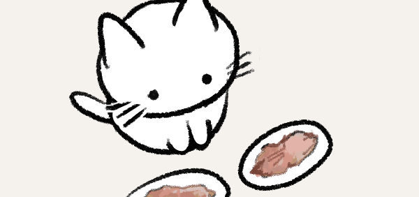
食感も猫にとっての美味しいに関係がありそうです。

では、誰かと一諸に楽しく食事をすることで美味しく感じる。
なんてことはあるのでしょうか？

自分で獲物をとり、食事することができます

ねこは本来１匹で行動する生きもの

しかし、飼いねこの場合は飼い主がいることで安心して食べられる。なんてことも。
一匹でのご飯を嫌うねこもいるようです。

ですが、あくまで安心して食事できるかどうかの話
基本的に単独で行動するねこにとっては誰かとの食事がおいしさとは関係ないかもしれません。
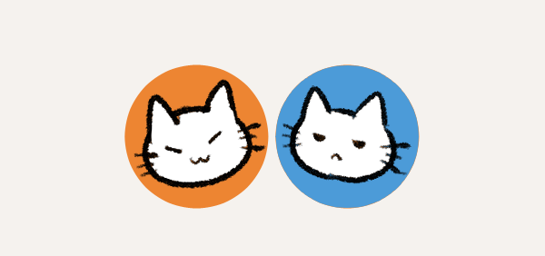
次に、
そのときの気分や場所にもおいしさは関係するのでしょうか？

まず食べる場所についてです。
人は食事をする場所によってもおいしさが変化します。
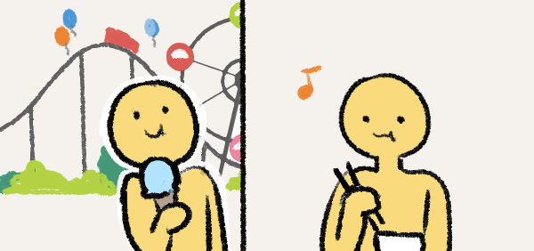
たとえば、お家で食べるご飯と、テーマパークで食べるご飯など
普段ご飯を食べる場所でのおいしさと違った場所で食べるご飯で、違ったおいしさを感じたりはしませんか？
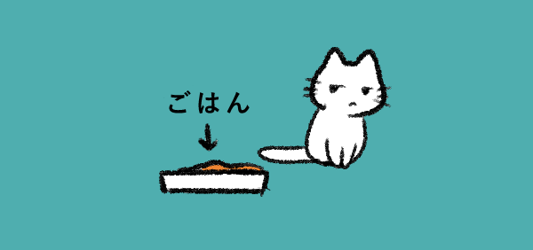
ねこはというと、静かで安心できる場所での食事を好みます。
安心できない環境ではごはんを口にしない様子も見られます。
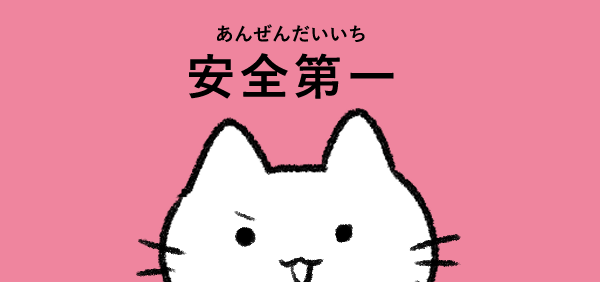
ねこは人のように場所の変化でおいしく感じるかはわかりませんが、
食べる環境の違いで食事を楽しむといったことは、警戒心が強いため難しいかもしれません。
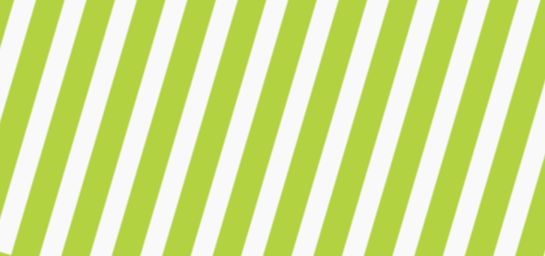
気分はというと、
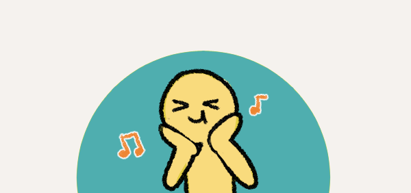
人は楽しいときや嬉しいとき、不安で落ち着かない気分よりも
よりおいしく感じるなんてこともあるかもしれません。
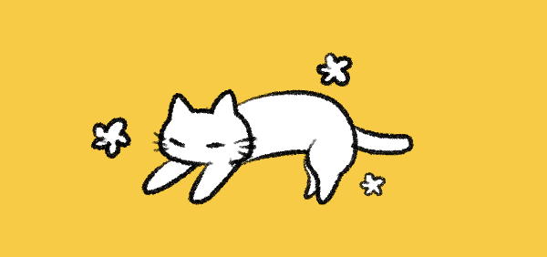
ねこも、先ほどのように気分が食事に影響することがあります。
安心できる場所での食事を好む。つまりリラックスしている状態での食事が好きなようですね。
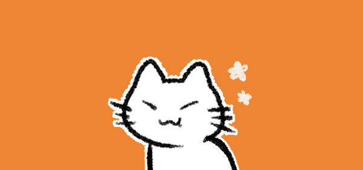
不安で周囲をずっと警戒して食べるご飯より、安心して食べるご飯の方が、
食事により集中して、おいしく感じる、なんてこともあるのかもしれません。